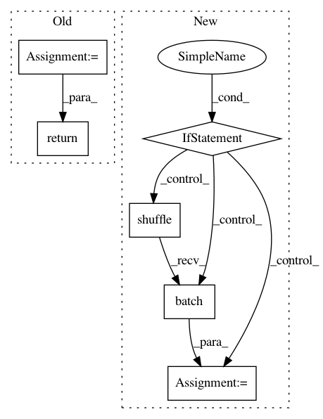

b198dc46455cc467759b9d8b51c37809ec6248e0,boston/keras/trainer/model.py,,input_fn,#Any#Any#Any#Any#,59
Before Change
// Override if this is eval.
if mode == tf.estimator.ModeKeys.EVAL:
num_epochs = 1
shuffle = False
y = np.asarray(y).astype("float32").reshape((-1, 1))
return tf.estimator.inputs.numpy_input_fn(
x,
y=y,
batch_size=batch_size,
num_epochs=num_epochs,
shuffle=shuffle,
queue_capacity=50000)
def serving_input_fn():
Defines the features to be passed to the model during inference.
After Change
// Convert the inputs to a Dataset.
dataset = tf.data.Dataset.from_tensor_slices(inputs)
if mode == tf.estimator.ModeKeys.TRAIN:
dataset = dataset.shuffle(1000).repeat().batch(batch_size)
if mode == tf.estimator.ModeKeys.EVAL:
dataset = dataset.batch(batch_size)
return dataset.make_one_shot_iterator().get_next()
In pattern: SUPERPATTERN
Frequency: 3
Non-data size: 6
Instances
Project Name: GoogleCloudPlatform/cloudml-samples
Commit Name: b198dc46455cc467759b9d8b51c37809ec6248e0
Time: 2018-10-20
Author: gogasca@google.com
File Name: boston/keras/trainer/model.py
Class Name:
Method Name: input_fn
Project Name: tensorflow/models
Commit Name: 54a5a577d06acce4d13aa8d564c85e8d57ac00e7
Time: 2018-09-29
Author: joelshor@google.com
File Name: research/gan/cyclegan/data_provider.py
Class Name:
Method Name: _provide_custom_dataset
Project Name: GoogleCloudPlatform/cloudml-samples
Commit Name: 1179e6e7b0caf883b32c4f466208e3373450c1d2
Time: 2018-10-15
Author: gogasca@google.com
File Name: imdb/keras/trainer/model.py
Class Name:
Method Name: input_fn